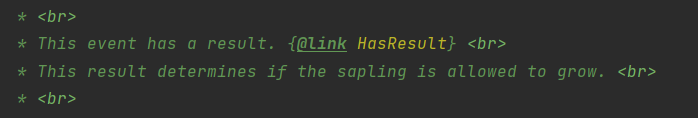

事件
是什么
你关注了一个微信公众号，微信公众号发文章时会通知你有新文章了，你阅读了新文章后可能会做某些操作比如评论，点赞等
在上面场景中，微信公众号发布新文章是一个事件，关注微信公众号就是订阅了这个事件，通知你时代表调用了你的一个函数来通知，新文章代表的是在这个事件包含的内容（参数），做出的某些操作就是你在这个函数中的操作，场景可以简化为：
- 关注公众号
- 公众号发布新文章
- 通知你
- 做出操作
如果替换成事件，则为：
- 订阅事件
- 事件发生
- 调用你在订阅时给出的函数
- 你在函数内做出操作
详细可以参考观察者模式
Forge中的事件
大概分为两条线，一个是游戏中的事件线，一个是模组事件线
游戏事件线
如攻击实体，与实体交互等事件
模组事件线
怎么用
调用的函数定义方法
在函数前加上注解 @SubscribeEvent，参数名为你要订阅的事件，如我想要订阅TickEvent.PlayerTickEvent则函数为:
|
如何注册函数
有两种方法来注册你的函数
第一种方法
对于游戏事件线，使用MinecraftForge.EVENT_BUS.register({Class})来将这个类注册进事件系统，其中的Class可以为静态也可以new一个，如果是静态的则需要将你要传递的函数设为static，不过为new，则将static去除，下面给出了两个例子
|
|
对于模组事件
|
即可注册函数，不用在函数前加上@SubscribeEvent，或
|
同样也要注意静态问题
第二种方法
在整个类前加入@Mod.EventBusSubscriber注解，注解源代码如下：
|
阅读源码可知，value的值为物理服务端还是物理客户端，或者两者均可，modid为你的模组id，bus为你要订阅的事件线，FORGE为游戏事件线，MOD为模组事件线，通过配置这三者可以达到你想要的目的
需要注意的是，通过这种方法注册，函数需要都是static
事件的一些属性
能否取消
通过调用event中的isCancelable()函数来得到当前事件是否能被取消，或者阅读源码查看是否有@Cancelable注解，有即为可以取消，函数返回true，否即没有，如果需要取消事件，可以调用setCanceled(boolean canceled)来决定是否取消事件，不能取消一个不可取消的事件，否则会崩溃
事件结果
有一些事件有结果，比如树苗长为大树事件，官方注解中提到

通过调用setResult（Result result）来返回一个结果，可以调用hasResult()来判断该事件是否有结果，有些没有有些有
优先级
@SubscribeEvent的注解具有优先级，可以通过设置priority值来设置处理优先级，可以为
- HIGHEST
- HIGH
- NORMAL
- LOW
- LOWEST
从上到下代表优先级从高到底，优先级高的会先执行（默认NORMAL）
子事件
如果你订阅了一个父事件，比如PlayerEvent，则他属下的所有事件发生时都会触发你的函数
注册
在之前提到了游戏需要添加物品，方块等，在这里称为注册物品，需要注册物品才能让游戏知道有这个物品。
根据什么注册
注册物品通常用使用的是ResourceLocation来注册，在实例化一个物品时通过setRegistryName来设置ResourceLocation，也可以实例化后再自己设置，注意的是只能设置一次，使用getRegistryName来获取。
如果一个Block和一个Item的ResourceLocation内名字相同，不会冲突，但如果不同的Item使用了同一个namespace和path，则最后注册的将会覆盖第一个
如何注册
DeferredRegister
官方文档给出的案例：
|
Register事件
通过订阅Register事件来注册物品，如果是注册Block，则为
|
如果是Item，则为
|
剩下待补充…
怎么引用
第一种方法为使用RegistryObject，第二种方法为@ObjectHolder，这些在注册完物品后会更新
RegistryObject
官方的例子比较好地说明了如何使用
|
使用RegistryObject.of(ResourceLocation，游戏中的某个东西)
@ObjectHandler
官方的规则较为复杂..在这只放出一些使用案例，由于后面注释过长，因此想要看原来的点这，在此只会说明注入的namespace和路径，如果没有诸如成功，则会注释其他
|
具体有没有对应的Registry参考 net.minecraftforge.registries.ForgeRegistries。也可以自定义Registry，如上面代码中的ManaType
创建自己的Registry
要创建自己的Registry，首先要实现IForgeRegistryEntry，其中定义了setRegistryName和getRegistryName，官方推荐继承ForgeRegistryEntry，其中有默认的实现
将自己的Registry注册到游戏中
首先需要一个类继承了ForgeRegistryEntry或者实现了IForgeRegistryEntry
订阅RegistryEvent.NewRegistry，经过测试，这一行代码能顺利注册自己的Registry
|
其中的manaTypes变量最好保存，他只是做个例子，你可以自定义自己的registry，比如技能等，setName和setType是必须的，还有其他的函数诸如setMaxID等。实测不加入setName可以注册成功，可以进入我的世界那个界面，但进入世界时会崩溃，所以需要setName
处理不存在的registry object
当mod更新时，可能会删除或者加入一些物品，对于那些删除的物品，可以通过订阅RegistryEvent.MissingMappings来解决删除物品的问题，具体见此
模组生命周期
模组加载过程中，各种生命周期事件会在特定的事件总线（FMLJavaModLoadingContext.get().getModEventBus()）上触发，比如注册对象，准备数据等
注册表事件
在mod被实例化后会被触发，有两个事件，NewRegistry和Register事件，NewRegistry即为创建自定义Registry，Register使用方法之前提到了，例子：
|
数据生成
待补充
一般设置
事件为FMLCommonSetupEvent，在物理服务端和物理客户端中都会被触发，比如注册capabilities（后期会提到）
不同端的设置
对于物理客户端，事件为FMLClientSetupEvent，对于物理服务端，事件为FMLDedicatedServerSetupEvent
跨模组交流
两个事件：
- InterModEnqueueEvent
- InterModProcessEvent
第一个事件为向不同mod发送消息，第二个事件为接受不同消息，发送和接受参考InterModComms类，包为net.minecraftforge.fml
其他
还有两个生命周期事件
- FMLConstructModEvent，在mod实例化之后，RegistryEvent之前触发
- FMLLoadCompleteEvent，在InterModComms（跨模组交流）后触发